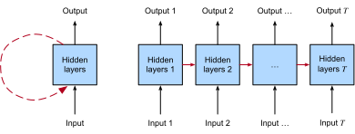

Recurrent Neural Networks
:label:chap_rnn
Up until now, we have focused primarily on fixed-length data. When introducing linear and logistic regression in :numref:chap_regression and :numref:chap_classification and multilayer perceptrons in :numref:chap_perceptrons, we were happy to assume that each feature vector $\mathbf{x}_i$ consisted of a fixed number of components $x_1, \dots, x_d$, where each numerical feature $x_j$ corresponded to a particular attribute. These datasets are sometimes called tabular, because they can be arranged in tables, where each example $i$ gets its own row, and each attribute gets its own column. Crucially, with tabular data, we seldom assume any particular structure over the columns.
Subsequently, in :numref:chap_cnn, we moved on to image data, where inputs consist of the raw pixel values at each coordinate in an image. Image data hardly fitted the bill of a protypical tabular dataset. There, we needed to call upon convolutional neural networks (CNNs) to handle the hierarchical structure and invariances. However, our data were still of fixed length. Every Fashion-MNIST image is represented as a $28 \times 28$ grid of pixel values. Moreover, our goal was to develop a model that looked at just one image and then outputted a single prediction. But what should we do when faced with a sequence of images, as in a video, or when tasked with producing a sequentially structured prediction, as in the case of image captioning?
A great many learning tasks require dealing with sequential data. Image captioning, speech synthesis, and music generation all require that models produce outputs consisting of sequences. In other domains, such as time series prediction, video analysis, and musical information retrieval, a model must learn from inputs that are sequences. These demands often arise simultaneously: tasks such as translating passages of text from one natural language to another, engaging in dialogue, or controlling a robot, demand that models both ingest and output sequentially structured data.
Recurrent neural networks (RNNs) are deep learning models that capture the dynamics of sequences via recurrent connections, which can be thought of as cycles in the network of nodes. This might seem counterintuitive at first. After all, it is the feedforward nature of neural networks that makes the order of computation unambiguous. However, recurrent edges are defined in a precise way that ensures that no such ambiguity can arise. Recurrent neural networks are unrolled across time steps (or sequence steps), with the same underlying parameters applied at each step. While the standard connections are applied synchronously to propagate each layer's activations to the subsequent layer at the same time step, the recurrent connections are dynamic, passing information across adjacent time steps. As the unfolded view in :numref:fig_unfolded-rnn reveals, RNNs can be thought of as feedforward neural networks where each layer's parameters (both conventional and recurrent) are shared across time steps.
 :label:fig_unfolded-rnn
Like neural networks more broadly, RNNs have a long discipline-spanning history, originating as models of the brain popularized by cognitive scientists and subsequently adopted as practical modeling tools employed by the machine learning community. As we do for deep learning more broadly, in this book we adopt the machine learning perspective, focusing on RNNs as practical tools that rose to popularity in the 2010s owing to breakthrough results on such diverse tasks as handwriting recognition :cite:graves2008novel, machine translation :cite:Sutskever.Vinyals.Le.2014, and recognizing medical diagnoses :cite:Lipton.Kale.2016. We point the reader interested in more background material to a publicly available comprehensive review :cite:Lipton.Berkowitz.Elkan.2015. We also note that sequentiality is not unique to RNNs. For example, the CNNs that we already introduced can be adapted to handle data of varying length, e.g., images of varying resolution. Moreover, RNNs have recently ceded considerable market share to Transformer models, which will be covered in :numref:chap_attention-and-transformers. However, RNNs rose to prominence as the default models for handling complex sequential structure in deep learning, and remain staple models for sequential modeling to this day. The stories of RNNs and of sequence modeling are inextricably linked, and this is as much a chapter about the ABCs of sequence modeling problems as it is a chapter about RNNs.
One key insight paved the way for a revolution in sequence modeling. While the inputs and targets for many fundamental tasks in machine learning cannot easily be represented as fixed-length vectors, they can often nevertheless be represented as varying-length sequences of fixed-length vectors. For example, documents can be represented as sequences of words; medical records can often be represented as sequences of events (encounters, medications, procedures, lab tests, diagnoses); videos can be represented as varying-length sequences of still images.
While sequence models have popped up in numerous application areas, basic research in the area has been driven predominantly by advances on core tasks in natural language processing. Thus, throughout this chapter, we will focus our exposition and examples on text data. If you get the hang of these examples, then applying the models to other data modalities should be relatively straightforward. In the next few sections, we introduce basic notation for sequences and some evaluation measures for assessing the quality of sequentially structured model outputs. After that, we discuss basic concepts of a language model and use this discussion to motivate our first RNN models. Finally, we describe the method for calculating gradients when backpropagating through RNNs and explore some challenges that are often encountered when training such networks, motivating the modern RNN architectures that will follow in :numref:chap_modern_rnn.